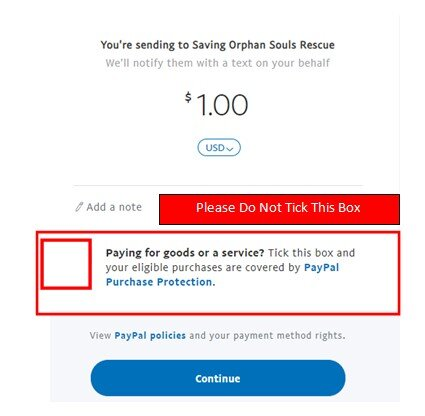
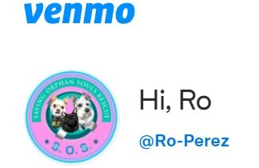

Every Gift Matters, Whether New or Used
- Blankets and towels
- Crates and carriers to transport animals in
- Pet toys
- Canned and dry Dog/Cat Food
- Cleaning Supplies
- Exercise Pens
You can find more details on what items we need by viewing our Amazon Wishlist!
Art by Freepik
Art by Freepik
How to donate using Paypal:
-
Follow this Link
-
Make sure Donations are made as "Family & Friends" and not as "Paying for goods or a service" as the image shown below:

How to donate using Venmo:
-
Follow this Link
-
Please ensure you see our Logo and "@Ro-Perez" when selecting to donate to our non profit as the image shown below:

If you have any difficulty in sending using Venmo - please contact us at: 347-308-0352 or 602-256-1430
DONATIONS can also be made via check payable to: Saving Orphan Souls Rescue and mailed to:
4725 W Wagoner Rd, Glendale, AZ 85308
Saving Orphan Souls Rescue would like to acknowledge the fosters who have previously helped us save animals, and our current fosters for their outstanding commitment, undivided love, security & socialization they provide to our animals!
We could not do this without you! Thank you!!
“We must fight against the spirit of unconscious cruelty with which we treat the animals. Animals suffer as much as we do. True humanity does not allow us to impose such sufferings on them. It is our duty to make the whole world recognize it.
Until we extend our circle of compassion to all living things, humanity will not find peace”
- Albert Schweitzer